Document {{ d.doc.docNo }}Model {{ d.doc.model }}
Cutaway axonometric, generated from model geometry · NTS
Exterior aerial perspective · rendered from the concept model
PROPOSED 3,000-SEAT CHURCH AUDITORIUM
Preliminary Architectural & Structural Engineering Design Proposal
LocationZimbabwe
Revision{{ d.doc.rev }}
Issue date{{ d.doc.date }}
StatusPreliminary Design — For Review
Proposed 3,000-seat church auditoriumContents · Document control
CONTENTS
{{ c.no }}
{{ c.title }}
{{ c.page }}
DOCUMENT CONTROL
Document no.{{ d.doc.docNo }}
Revision{{ d.doc.rev }}
Issue date{{ d.doc.date }}
Status{{ d.doc.status }}
Prepared by{{ d.doc.preparedBy }}
Checked by{{ d.doc.checkedBy }}
Model source{{ d.doc.modelFile }} · scene {{ d.doc.modelScene }}
HOW TO READ VALUES
Every value in this document carries a source mark. Values in square brackets are fields not yet supplied.
MMeasured from model geometry
PAuthored model property
EDerived preliminary estimate
CRequires confirmation
XExcluded from this document
The concept model is flagged in its own metadata as “{{ d.doc.modelFlag }}”. Nothing in this document constitutes approved architectural or structural design.
{{ d.doc.docNo }} · Rev {{ d.doc.rev }} · {{ d.doc.date }}Preliminary — for review · Not for construction02
Proposed 3,000-seat church auditorium01 · Project overview
Compiled from concept model {{ d.doc.model }}. All dimensions in metres unless noted.
{{ d.copy.overview.0 }}
{{ d.copy.overview.1 }}
{{ d.copy.overview.2 }}
TABLE 1.1Principal project metrics. Model-derived; none verified.
{{ m.label }}{{ m.src }}
{{ m.value }}{{ m.unit }}
{{ m.note }}
{{ d.doc.docNo }} · Rev {{ d.doc.rev }} · {{ d.doc.date }}Preliminary — for review · Not for construction03
1
2
3
4
FIG. 2.1Exterior aerial perspective from the concept model. Callouts 1–4 refer to the principles opposite; positions are set per render.
Proposed 3,000-seat church auditorium02 · Architectural vision
{{ d.copy.vision.0 }}
{{ d.copy.vision.1 }}
{{ d.copy.vision.2 }}
{{ p.n }}
{{ p.t }}{{ p.b }}
FIG. 2.2Cutaway aerial perspective showing the tiered rear seating, cross aisle and platform beneath the truss roof.
{{ d.doc.docNo }} · Rev {{ d.doc.rev }} · {{ d.doc.date }}Preliminary — for review · Not for construction04
Proposed 3,000-seat church auditorium03 · Project at a glance
ArchitecturalTABLE 3.1
{{ r.label }}
{{ r.status }}{{ r.value }} {{ r.unit }}{{ r.src }}
StructuralTABLE 3.2
{{ r.label }}
{{ r.status }}{{ r.value }} {{ r.unit }}{{ r.src }}
Functional capacityTABLE 3.3
{{ r.label }}
{{ r.status }}{{ r.value }} {{ r.unit }}{{ r.src }}
Model development statusTABLE 3.4
{{ r.label }}{{ r.value }}
Engineering verification statusTABLE 3.5
{{ r.label }}{{ r.value }}
{{ d.doc.docNo }} · Rev {{ d.doc.rev }} · {{ d.doc.date }}Preliminary — for review · Not for construction05
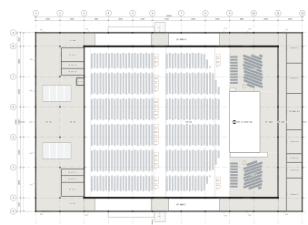
SCHEDULESpace allowances from model properties, m²
{{ r.code }}{{ r.name }}{{ r.area }}
EXITS · EFFECTIVE CLEAR WIDTH (m)
{{ x.id }}{{ x.role }}{{ x.clear }}
LEGEND
Wall, column — cut
Congregation seating
Choir seating
Wheelchair / refuge space
Space allowance (SP-)
Canopy over (assumption)
CONCEPT — UNVERIFIED
NOT FOR CONSTRUCTION
PROJECTProposed 3,000-Seat Church AuditoriumZimbabwe · {{ d.doc.site }}
DRAWING TITLEGeneral arrangement plan — Level L00
Bounding-box schematic from model06
Proposed 3,000-seat church auditorium05 · Seating and congregation layout
05
Seating and congregation layout
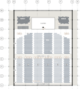
FIG. 5.1
A-110 · 1:500. Seats from model objects SEAT-C, -H, -K; blocks shaded alternately.
SO · setting-out point, platform front edge centre
Dotted rings: 10 m distance intervals from SO (geometric).
Accent ring: 45.45 m maximum viewing distance (model property).
Wheelchair space
Capacity scheduleT 5.1
BLOCKROWSSEATS
{{ b.id }}{{ b.rows }}{{ b.seats }}
Congregation total{{ d.seating.totalCongregation }}
Row, aisle & accessT 5.2
{{ r.label }}{{ r.value }}
Sightline analysisT 5.3
{{ r.label }}{{ r.value }}
Sightline and off-axis values are computed by the model script and have not been checked. Seating outside the target: 329 choir, 30 companion.
{{ d.doc.docNo }} · Rev {{ d.doc.rev }} · {{ d.doc.date }}Preliminary — for review · Not for construction07
Proposed 3,000-seat church auditorium06 · Interior architecture
From the rear platform at +4.600 towards the 20 m platform and the 12.8 × 7.2 m main LED wall.{{ d.copy.interior.0 }}
From the platform: front slope, level cross aisle with wheelchair band, rear tiers.
FIG. 6.3Section A–A, 1:500 (A-301). Tiered seating against the truss zone: bottom chord +14.175, roof +18.400.
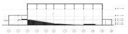
{{ d.doc.docNo }} · Rev {{ d.doc.rev }} · {{ d.doc.date }}Preliminary — for review · Not for construction08
PART BSECTIONS 07 – 10
07
Structure
07 Structural engineering concept08 Roof structure09 Structural member schedules10 Building elevations and sections
Proposed 3,000-seat church auditorium07 · Structural engineering concept
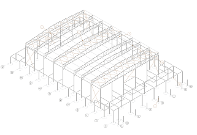
FIG. 7.1 · S-100Structural frame axonometric from model member centrelines. NTS. Footings dashed: reference positions only.
07
Structural engineering concept
{{ d.copy.structure.0 }}
{{ d.copy.structure.1 }}
{{ d.copy.structure.2 }}
Callout keyTABLE 7.1
{{ c.n }}
{{ c.t }}{{ c.ref }}
{{ c.q }}
{{ d.doc.docNo }} · Rev {{ d.doc.rev }} · {{ d.doc.date }}Preliminary — for review · Not for construction10
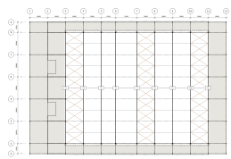
1 · ROOF FRAMING PLAN · 1:400
MEMBER KEY
T3–T11 truss top chord, 50.000 m span
Beams: eaves, wing roofs
Purlins, 11 lines per bay
Roof X-bracing, bays 3–4, 7–8, 10–11
Gutter (size TBC)
Downpipe, 28 no.
ROOF DATA
{{ r.k }}{{ r.v }}
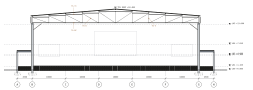
2 · TRANSVERSE SECTION B–B
AT TRUSS T6 · 1:300
NOTES
1. Geometry from member centrelines in model {{ d.doc.model }}. All sections are placeholders.
2. Roof covering: “Hall metal roof (concept)” per model. Profile, gauge and fixings [ROOF SPECIFICATION].
3. Drainage: 4 eaves gutters to 28 downpipes discharging to grade / soakaway (concept). Catchment and sizes by hydraulic engineer.
4. Bay spacing 8.0 m typical; 6.5 m (5–6) and 9.5 m (6–7) to be confirmed (DR-11).
5. Truss member IDs follow STR-TRUSS-Tn-TCxx / BCxx / Vxx / Dxx.
CONCEPT — UNVERIFIED
NOT FOR CONSTRUCTION
PROJECTProposed 3,000-Seat Church AuditoriumZimbabwe · {{ d.doc.site }}
DRAWING TITLERoof framing plan and transverse section
08 · Roof structure11
Proposed 3,000-seat church auditorium09 · Structural member schedules
09
Structural member schedules
Grouped by member type. Section designations follow the SANS 10162-1 format and are to be determined by the structural engineer. The full member-by-member listing continues in Appendix C.
IDGRID / LOCATIONTYPESECTIONLENGTH / DIMSGRADEQTYSTATUSREMARKS
{{ g.title }}{{ g.table }}
{{ r.id }}{{ r.grid }}{{ r.type }}{{ r.section }}{{ r.size }}{{ r.grade }}{{ r.qty }}{{ r.status }}{{ r.remarks }}
{{ d.doc.docNo }} · Rev {{ d.doc.rev }} · {{ d.doc.date }}Preliminary — for review · Not for construction12
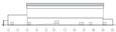
1 · SIDE ELEVATION (MODEL +X) · 1:500 · A-202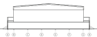
2 · FRONT ELEVATION (MODEL −Y) · 1:500 · A-200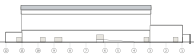
3 · SIDE ELEVATION (MODEL −X) · 1:500 · A-203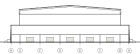
4 · REAR ELEVATION (MODEL +Y) · 1:500 · A-201LEVELS (MODEL DATUMS)L00 ±0.000 · groundL01 +1.150 · cross aisleL02 +4.600 · rear platform, upper foyerL03 +4.300 · sequence to confirmL04 +7.650 · foyer roof zoneL05 +13.600 · hall eaves zone
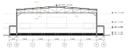
6 · TRANSVERSE SECTION B–B AT GRID 6 · 1:500 · A-302
NOTES
1. Elevations are projected outlines of envelope objects; openings other than external doors not modelled.
2. Orientation is given in model axes. True north is not defined (DR-12).
3. Cut elements shown solid; elements beyond in hairline.
4. External steps and ramps assume flat grade.
CONCEPT — UNVERIFIED
NOT FOR CONSTRUCTION
PROJECTProposed 3,000-Seat Church AuditoriumZimbabwe · {{ d.doc.site }}
DRAWING TITLEBuilding elevations and sections
10 · Elevations and sections13
Proposed 3,000-seat church auditorium11 · Functional and building services review
11
Functional and building services review
FIG. 11.1Exit positions X01–X17 on A-100, reduced. See schedule on sheet 06.
Represented in modelRequires verification
{{ s.n }}{{ s.t }}
{{ s.has }}
{{ s.verify }}
{{ d.doc.docNo }} · Rev {{ d.doc.rev }} · {{ d.doc.date }}Preliminary — for review · Not for construction14
Proposed 3,000-seat church auditorium12 · Preliminary quantities and cost framework
12
Preliminary quantities and cost framework
TABLE 12.1
Quantities are taken from the concept model and grouped by basis. Rates and amounts are left for a quantity surveyor; no prices or totals are given in this document.
REFITEMQTYUNITBASISRATEAMOUNTNOTES
{{ g.group }}
{{ q.ref }}{{ q.item }}{{ q.qty }}{{ q.unit }}{{ q.basis }}[QS][QS]{{ q.note }}
{{ d.doc.docNo }} · Rev {{ d.doc.rev }} · {{ d.doc.date }}Preliminary — for review · Not for construction15
Proposed 3,000-seat church auditorium13 · Design review and engineering risks
13
Design review and engineering risks
STATEMENT
The concept model is a coordination and briefing tool. It does not constitute approved structural engineering. Member sizes, connections, foundations and stability have not been analysed or designed, and no element shown may be used for construction, procurement or statutory submission until designed and signed off by a registered professional engineer.
●●●Critical
●●○Major
●○○Minor
Severity proposed for review.
REFDISCIPLINEFINDINGSEVERITYPROPOSED RESPONSERESPONSIBLESTATUS
{{ r.ref }}{{ r.disc }}{{ r.finding }}{{ r.sevGlyph }}{{ r.sev }}{{ r.response }}{{ r.party }}{{ r.status }}
{{ d.doc.docNo }} · Rev {{ d.doc.rev }} · {{ d.doc.date }}Preliminary — for review · Not for construction16
Proposed 3,000-seat church auditorium14 · Recommendations and next steps
14
Recommendations and next steps
From concept to constructionFIG. 14.1
{{ p.n }}
{{ p.name }}
{{ p.label }}
{{ p.note }}
Current, per project records
Outstanding
No stage is recorded as complete.
{{ d.doc.docNo }} · Rev {{ d.doc.rev }} · {{ d.doc.date }}Preliminary — for review · Not for construction17
Proposed 3,000-seat church auditoriumAppendix A · Technical drawing register
APPENDIX A
Technical drawing register
NO.TITLESCALESIZEREVSTATUS
{{ g.no }}{{ g.title }}
{{ g.file }}{{ g.scale }}{{ g.size }}{{ g.rev }}{{ g.status }}
APPENDIX TEMPLATES
B · Full-size technical drawing (A3)
C · Structural schedule, continuing
D · Assumptions register · calculation summaries
E · Verification report · model references
F · Revision history
Quantity schedules use Table 12.1 format
{{ d.doc.docNo }} · Rev {{ d.doc.rev }} · {{ d.doc.date }}Preliminary — for review · Not for construction18
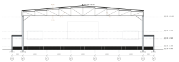
1 · TRUSS T6 ELEVATION AT GRID 6 · 1:250
2 · [DETAIL] TRUSS BEARING AT B/6 · 1:20Reserved for engineer’s detail. Not modelled.
3 · [DETAIL] APEX SPLICE · 1:20Reserved for engineer’s detail. Not modelled.
4 · [DETAIL] KNEE BRACE B6 · 1:20Reserved for engineer’s detail. Not modelled.
NOTES
1. Template sheet for full-size technical drawings. Drawing area 338 × 277 mm.
2. Truss T6: 41 members (TC 10, BC 10, V 11, D 10). Span 50.000 m. Sections are placeholders.
3. Detail frames are reserved space; do not populate with unverified details.
REVISIONS
REVDESCRIPTIONDATE
{{ v.rev }}{{ v.desc }}{{ v.date }}
CONCEPT — UNVERIFIED
NOT FOR CONSTRUCTION
PROJECTProposed 3,000-Seat Church AuditoriumZimbabwe · {{ d.doc.site }}
DRAWING TITLETruss T6 elevation
Appendix B19
Proposed 3,000-seat church auditoriumAppendix C · Structural schedules
APPENDIX C
Column schedule
Table C.1 · Columns, all 76 model objectsRows {{ colRangeA }} of 76 · continues
MEMBER IDGRIDROLERESERVATION (m)BASETOPLENGTHSTATUS
{{ c.id }}{{ c.grid }}{{ c.role }}{{ c.section }}{{ c.base }}{{ c.top }}{{ c.length }}{{ c.status }}
{{ d.doc.docNo }} · Rev {{ d.doc.rev }} · {{ d.doc.date }}Preliminary — for review · Not for construction20
Proposed 3,000-seat church auditoriumAppendix C · Structural schedules
Table C.1 · Columns (continued)Rows {{ colRangeB }} of 76 · end of table
MEMBER IDGRIDROLERESERVATION (m)BASETOPLENGTHSTATUS
{{ c.id }}{{ c.grid }}{{ c.role }}{{ c.section }}{{ c.base }}{{ c.top }}{{ c.length }}{{ c.status }}
CONTINUATION RULE
Tables break between rows only. Each continuation page repeats the table number, title with “(continued)”, column header and row range. Remaining schedules (beams, trusses, purlins, bracing, footings) follow in the same format.
{{ d.doc.docNo }} · Rev {{ d.doc.rev }} · {{ d.doc.date }}Preliminary — for review · Not for construction21
Proposed 3,000-seat church auditoriumAppendix D · Assumptions · Calculations
APPENDIX D
Assumptions register and calculation summaries
Assumptions registerTABLE D.1
{{ a.ref }}{{ a.item }}{{ a.source }}{{ a.status }}
Calculation summariesTABLE D.2
{{ c.ref }}{{ c.title }}{{ c.status }}{{ c.result }}
{{ d.doc.docNo }} · Rev {{ d.doc.rev }} · {{ d.doc.date }}Preliminary — for review · Not for construction22
Proposed 3,000-seat church auditoriumAppendix E · Verification · Model references
APPENDIX E
Verification report and model references
Model self-checks (automated, unverified)TABLE E.1
{{ c.check }}{{ c.value }}{{ c.basis }}
Model collections and namingTABLE E.2
{{ m.prefix }}{{ m.content }}{{ m.count }}
Object names follow DISCIPLINE-ELEMENT-LOCATION, e.g. STR-COL-B6, STR-TRUSS-T6-TC02, SEAT-C-R01-B2-S10, DR-EXT-MAIN-1. Collection counts include nested objects.
{{ d.doc.docNo }} · Rev {{ d.doc.rev }} · {{ d.doc.date }}Preliminary — for review · Not for construction23
Proposed 3,000-seat church auditoriumAppendix F · Revision history
APPENDIX F
Revision history
REVDATEDESCRIPTIONBYCHECKEDMODEL
{{ v.rev }}{{ v.date }}{{ v.desc }}{{ v.by }}{{ v.chk }}{{ v.model }}
MODEL REVISIONS
PL05Referenced by client decision recorded in the model (no extra chairs on stage floor).
PL06-21c8b6d8b4Current. Source of all values in this document. Viewing copy.
REVIEW SIGN-OFF
BUILDING COMMITTEEName · signature · date
ARCHITECTName · signature · date
STRUCTURAL ENGINEERName · signature · date
{{ d.doc.docNo }} · Rev {{ d.doc.rev }} · {{ d.doc.date }}Preliminary — for review · Not for construction24
Proposed 3,000-seat church auditoriumDS · Document design system
DS-01
Type, colour and grid
Display · Newsreader 300
31 / 32.5 ptAuditorium
H1 · Newsreader 400
27 / 28 pt · −1%Project overview
Lead · Newsreader 400
13 / 18.5 ptA single long-span hall of 50 metres.
Body · Archivo 400
8.6 / 13.3 ptPurlins at 5.0 m centres on plan span between trusses.
Table · Archivo 400
6.2–7.2 pt · tabularHall portal column · 18 · 14.900 m
Data · IBM Plex Mono
5.2–9 pt · 400 / 500STR-COL-B6 · A-100 · Rev [REV] · +14.000
Label · Plex Mono 500
6.2 pt · caps · +7%Running header · table header
A4 GRIDMargins: top 24, bottom 22, binding 25, outer 15 mm. Rail 38 mm + gutter 4 + text 128 mm. Running header at 9 mm, folio at 9 mm from foot.A3 sheets: 8 mm border, 62 mm title block, drawing area 338 × 277 mm.
{{ d.doc.docNo }} · Rev {{ d.doc.rev }} · {{ d.doc.date }}Preliminary — for review · Not for construction25
Engineering drawing language
DS-02
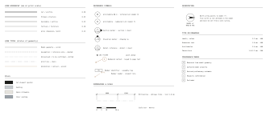
Drawings must print legibly in monochrome. Status is carried by line type and mark, never by colour alone; bronze is reserved for annotation.
All drawings are generated as true-scale SVG in millimetres from model geometry. Stated scales hold only when the sheet prints at 100%.
Model geometry is drawn solid. Assumptions and reference-only items are dashed. Unresolved items are dotted and carry a review reference.
DOCUMENT STANDARD
DRAWING TITLEDrawing language and symbols
Design system26